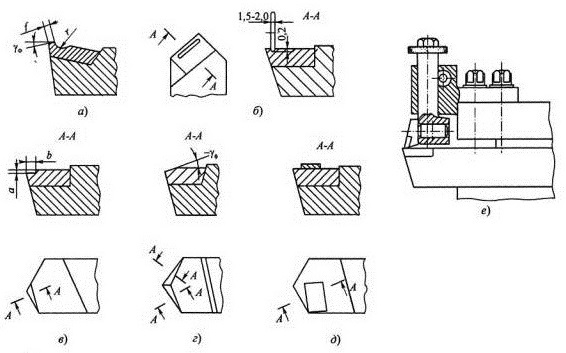
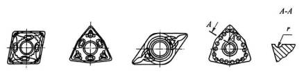

Проблема надежного удаления стружки из зоны резания имеет наиболее острое значение при использовании твердосплавных резцов и особенно при обработке пластичных материалов, когда из-за резко возросших скоростей резания значительно увеличивается объем образующейся стружки и изменяется ее форма. Нагретая до высоких температур стружка в виде непрерывной ленты наматывается на заготовку и резец, портит обрабатываемую поверхность и представляет собой серьезную опасность для рабочих, поэтому станочнику приходится часто останавливать станок для ее удаления. Для получения транспортабельной формы стружки в виде отдельных кусочков, сегментов, колец, коротких завитков или сплошной пружины применяют специальные способы стружкозавивания и стружколомания. Обычно для этого на передней поверхности резца на пути сходящей стружки создают специальные препятствия в виде лунок, канавок, сферических выступов или углублений вдоль режущей кромки, а также накладных нерегулируемых уступов и регулируемых стружколомов.
Лунки (а, б) и уступы (в), применяемые на черновых и получистовых операциях, получают путем вышлифовывания алмазными кругами у проходных резцов с напайными твердосплавными пластинами. К сожалению, они не универсальны, так как для каждого обрабатываемого материала и определенного режима резания требуется определять опытным путем их параметры f, г, а, b и др., обеспечивающие нужную форму стружки.
Хорошо показала себя заточка фасок переменной ширины вдоль главной и вспомогательной режущих кромок с отрицательным передним углом (г). Ребро, образующееся при их пересечении, обеспечивает надежное дробление стружки при точении высоколегированных сталей, но несколько снижает стойкость резца.
Накладные стружколомающие элементы используются двух типов: нерегулируемые (д) и регулируемые (е). Первые выполняются в виде пластины, напаиваемой сверху режущей пластины. В отличие от лунок и уступов, такой стружколом не снижает прочности режущей пластины, но требует предварительного экспериментального определения положения относительно главной режущей кромки. При переточке резцов необходима перепайка накладной пластины, что неудобно, поэтому такие стружколомы применяются крайне редко.
Накладные регулируемые стружколомы представляют собой самостоятельные устройства, закрепляемые на суппорте станка. Их рабочая часть выполняется в виде напайной твердосплавной пластины-уступа, устанавливаемой в определенном положении относительно режущей кромки, которое обеспечивает надежное дробление или завивание стружки. Устройство позволяет регулировать положение такого уступа относительно режущей кромки при смене режимов резания. Недостатком уступа является сложность и громоздкость конструкции, ухудшающие условия отвода стружки.
У резцов, оснащенных СМП, стружколомающие канавки и уступы получают методом прессования. При этом форма передней поверхности принимает порой экзотический вид с использованием лунок, канавок и уступов переменных глубины, высоты и ширины. Здесь эффект стружкодробления достигается как за счет изменения ширины площади контакта стружки с передней поверхностью резца, так и за счет силового воздействия на сходящую стружку. Кроме того, эффект усиливается за счет изменения по длине режущей кромки условий контакта стружки с передней поверхностью резца и улучшения условий подвода СОЖ в область контакта.
В автоматизированном производстве применяют также кинематический способ дробления стружки, заключающийся в использовании принудительных колебаний резца в направлении подачи. При этом толщина стружки меняется и стружка распадается на отдельные кусочки. Следует отметить, что этот метод несколько снижает стойкость инструмента и требует применения специальных устройств, встраиваемых в механизм подачи станка, что усложняет конструкцию последнего.